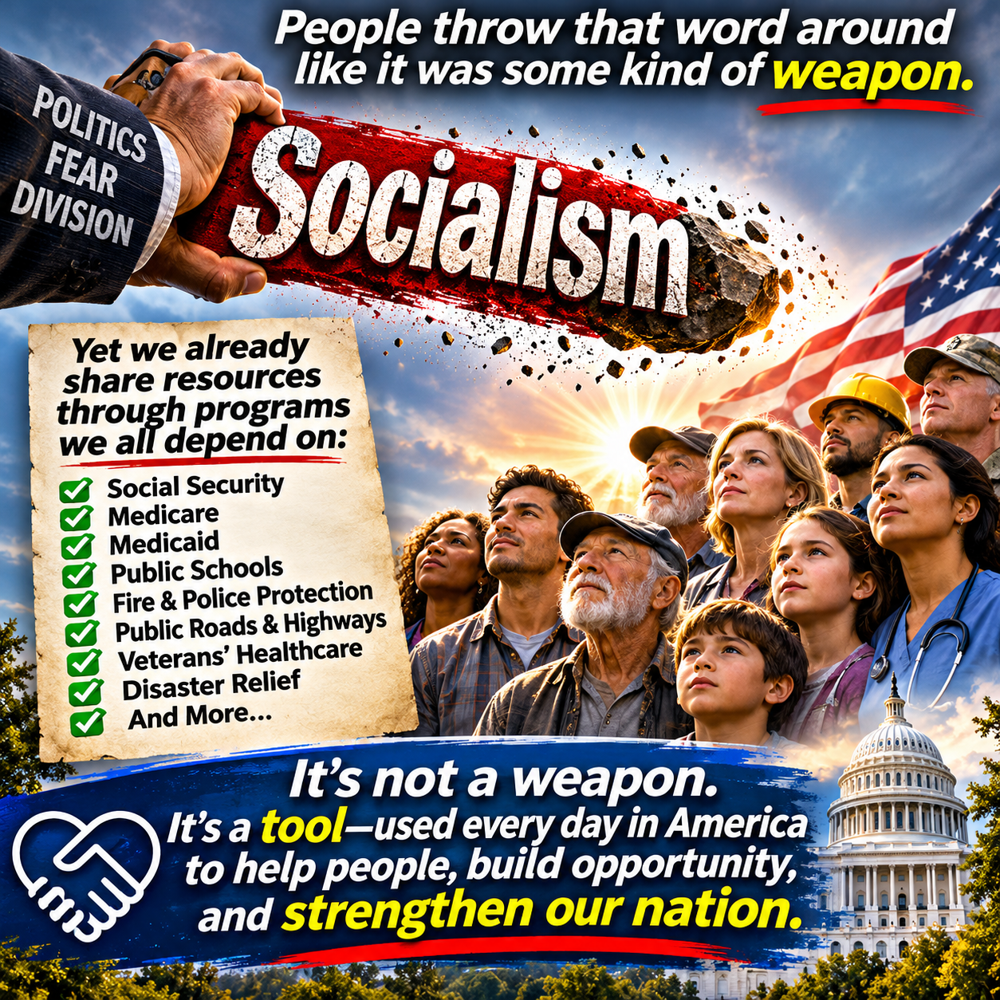

Socialism Is Not a Weapon: Why America Must Debate Policies, Not Labels
Universal Healthcare Social | November 2026
The word used to stop a conversation
There is a word that gets thrown around in American politics as though it were a weapon: socialism. Want affordable healthcare? Someone shouts 'socialism!' Want to protect Social Security or ensure children have access to food? The label is often used to end the discussion before anyone examines the policy. But labels are not arguments. We should ask what a proposal actually does, who benefits, what it costs, and whether it works.

America already shares responsibility
Americans routinely pool resources to accomplish things that individuals could not easily accomplish alone. Social Security provides retirement, disability, and survivor benefits financed largely by payroll contributions. Medicare helps finance healthcare for older adults and certain people with disabilities. Medicaid covers eligible low-income individuals and families. Public schools educate children; fire departments and emergency responders protect communities; public roads, bridges, libraries, sanitation systems, and disaster relief serve shared needs. Veterans' benefits recognize a collective obligation to those who served.
A critical distinction: public services are not all socialism
These examples do not mean that every public service is socialist. Socialism generally involves social or public ownership or control of productive resources; social insurance and taxpayer-funded services can also operate within a predominantly capitalist economy. That distinction matters. The point is not to win an argument by relabeling everything. The point is that cooperation and public financing already play substantial roles in American life.
Capitalism and collective responsibility can coexist
Private businesses, entrepreneurship, competition, and innovation create substantial value. Markets, however, do not solve every problem equally well. In an emergency room, patients cannot comparison-shop as they would for ordinary consumer goods. A person diagnosed with cancer should not have to decide between treatment and financial survival. The existence of market strengths does not eliminate the need to evaluate whether a particular market structure serves patients well.
Why Medicare for All belongs in the discussion
Under comprehensive Medicare for All proposals, most covered medical care would be financed through a universal public system instead of separate private insurance premiums, deductibles, and copays. Doctors and hospitals could remain independent providers. Care would still cost money, and taxes would finance the program. Whether households save would depend on the law's financing, current insurance costs, income, and the effects on overall spending. Transition planning, reimbursement levels, access to care, and workforce effects require serious scrutiny. None of those questions is answered by shouting a political label.
People needing help are not automatically lazy
A retired worker receiving Social Security may have contributed for decades. A disabled veteran may have sacrificed for the country. A parent receiving assistance may be employed and still struggle to make ends meet. A family facing a crushing hospital bill may have worked hard, saved, and maintained insurance. We can debate program design and incentives without treating people who need assistance as morally inferior.
Evaluate the system, not the slogan
A systems-engineering approach asks practical questions: Does the program achieve its goals? Is it efficient and sustainable? Are its costs transparent? Does it reduce preventable harm? Does it preserve incentives to work, innovate, and provide quality services? What alternatives perform better? These questions are more useful than turning capitalism or socialism into a substitute for analysis.
There is no them, only us
We do not have to choose between individual opportunity and collective responsibility. We can reward achievement while protecting people from risks no one can completely control. When political language becomes a weapon, the public loses the chance to solve real problems. The next time someone says 'socialism' as if the word settles everything, ask which specific policy they oppose—and why. Let us compare evidence, costs, benefits, and alternatives. There is no them, only us.
Further reading
Social Security Administration (ssa.gov); Centers for Medicare & Medicaid Services (cms.gov); Congressional Budget Office (cbo.gov); Congress.gov.